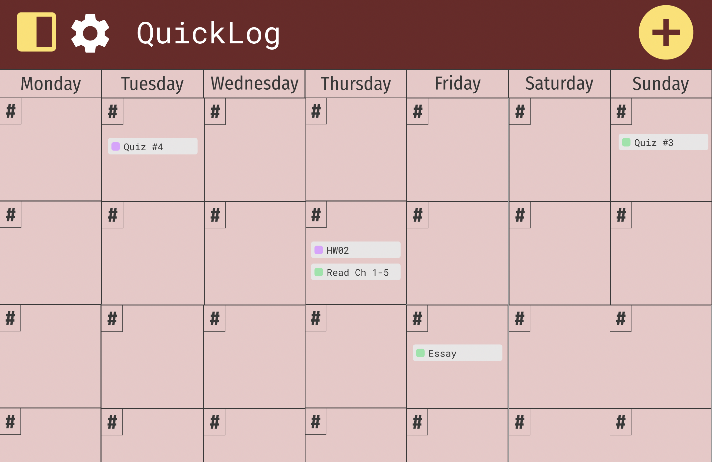
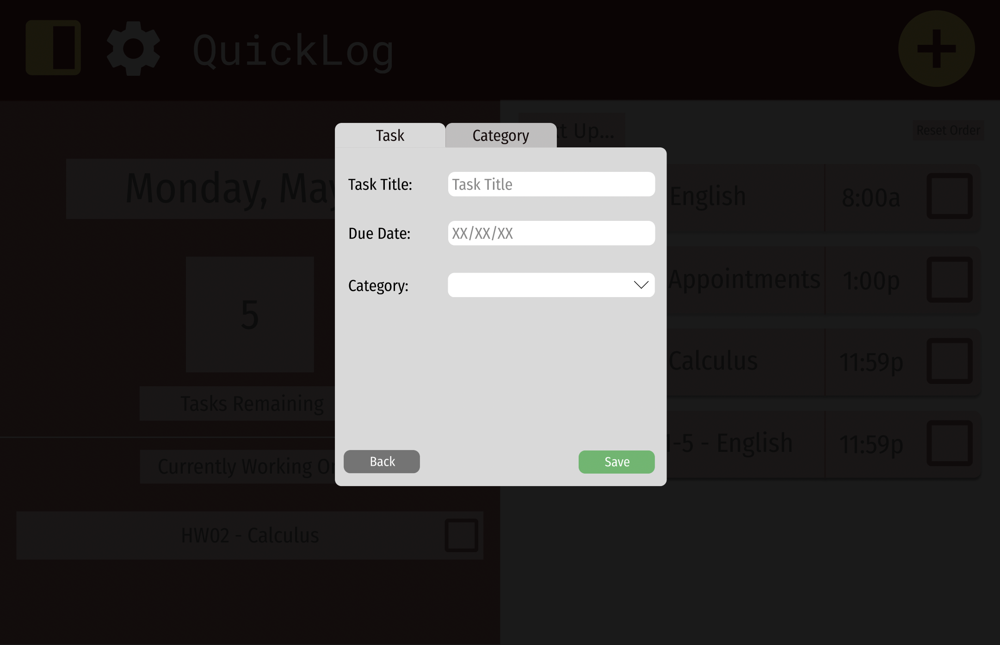
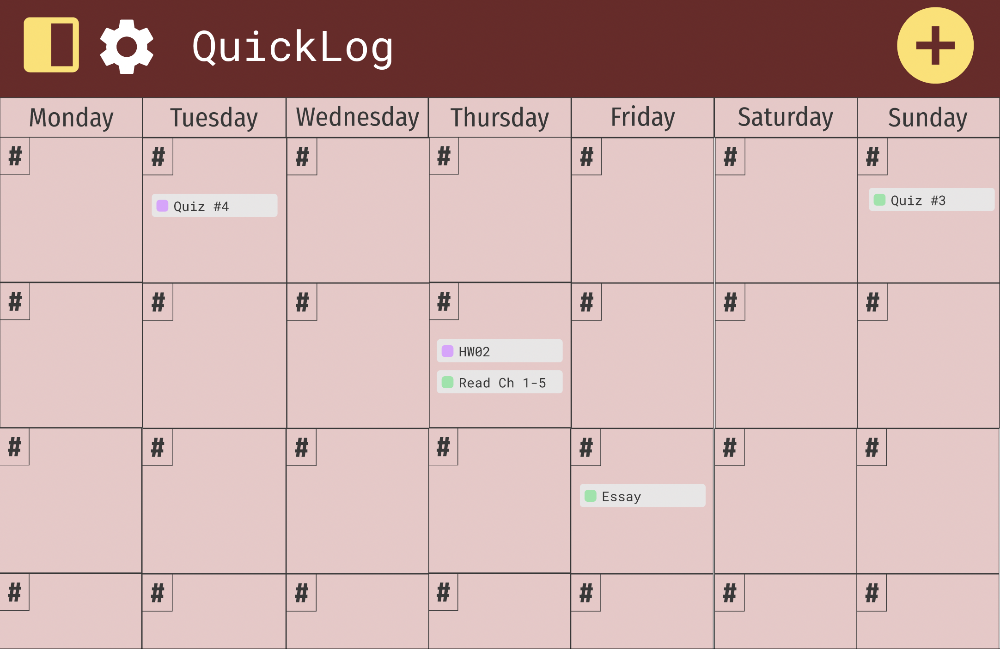
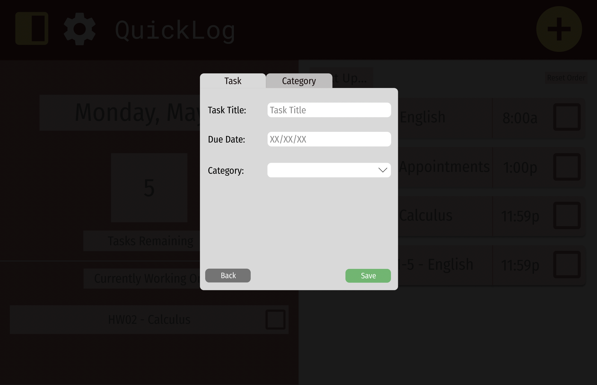

Figma Student Calender
 



Role: UI/UX Designer
Programs Used: Figma
What is the purpose of this application: This project is supposed to be a calender focused specifically on student needs. The calender has 3 different views to which you can view your tasks in any way you want. You are able to change the background color and picture to your liking, and the archiving view keeps tract of your completed tasks so you can see what you have already completed.
What was the design process: We polled 13 students and asked them their issues and gripes with their current calenders. With this information, my team and I set about designing a calender that would address all of these solutions. Figma was decided as the best tool to create a potential mockup of what the design could look like, while giving enough programming ability to enact some of the functionality we needed.
What did I learn in this design process: I learned how to use figma, use its inbuilt programming system to create functionality for our calender. I leanred how to use recieved feedback to design and develop a tool based around addressing those issues.
View ProjectView Github Page